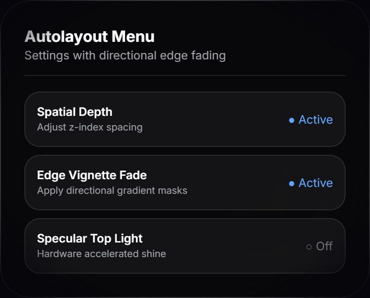
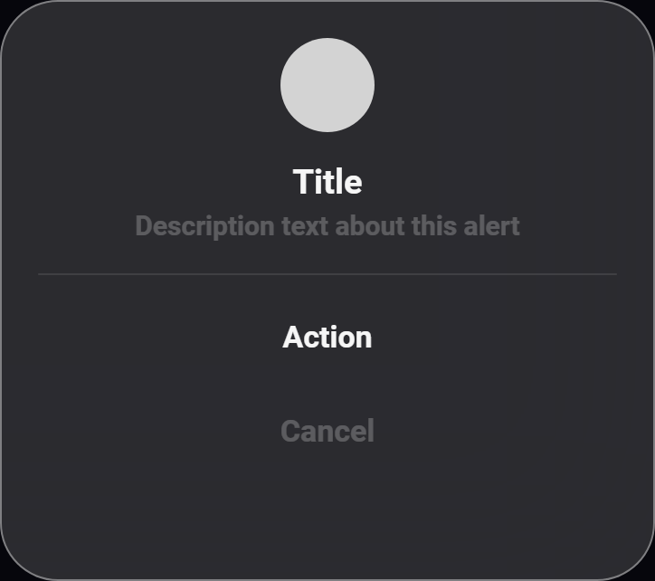
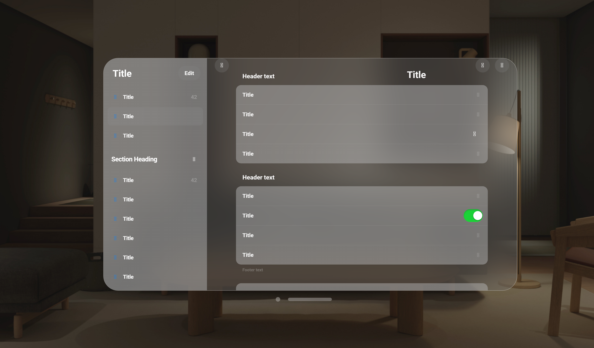

Each section: the actual Figma reference render, its measured spec, and exactly what shipped in the app against it. Nothing here is my invention — images come from your Figma component library exports, numbers from the measured documentation.
Shipped: already a line-by-line port (v8.4) — untouched by this branch. It is the calibration source: its specular rims, VOrnament capsule and VAlert all consume the same core kit the other screens now inherit.
Theme Gallery selector conjured
windowless_theme_scroller.dart · Vision Pro Spatial UI Kit 69-1926
Shipped: the Free/Premium shelf switch is wrapped in VConjured — assembles in place (94%→100% scale + fade + light bloom), suspension shadow far below, top/bottom 12% edge dissolve. No card behind it: it floats in the room beside the preview window.
Settings menu Autolayout Menu, vignette
vision_autolayout_menu.png · VisionOS Autolayout Menu 0-1 · settings_drawer.dart

Measured
width 240 @ frame 637 (37.7% of screen) · radius 24 · border 1px white
fill: rgba(79,79,79,.1) / white .1 at 127° · blur 40
active row: gradient white .16 → 0 · icon disc white .3
vignette mask: radial-gradient(ellipse at center, black 70%, transparent 100%)
Shipped: menu geometry was already 1:1. Added the §41 elliptical vignette (VVignette) and, per your map's row-12 note, a blur-only depth-of-field layer behind (no dim — the room stays lit, just out of focus; skipped on web for the same perf trade the market makes).
Alert Prime Video 130:75006
vision_alert_dialog.png · vision_kit.dart VAlert

Measured
320 wide · radius 32 · 1.4px white .4 stroke · glass rgba(128,128,128,.3) over blur 50
icon 52 in white circle · title 19/24 white .96 · desc 15/20 #545454
buttons 280×44 · radius 16 · 17 semibold white .96 · no dimming behind
Shipped: already ported at its own Figma geometry and scaled as one unit (v8.4). Verified against the render — no changes needed.
Chat / Composer message bar material
vision_spatial_chat_box.png · composer = Figma 1-240 (the chat-box file is your map's row-9 IGNORE; only its material techniques inform the bar)
Shipped: the option set was already complete per 1-240 (Internet / Research / Deep Research / Private / Attach / Create image·video·audio / Options). This branch added the missing material: real backdrop blur on field, + and send (web-safe), inset white lip + 0 8 32 ambient shadow.
Shipped: windows were already a straight scene-coordinate port with measured FGlass (blur 50). This branch added the wechat edge-fading: both scrolling lists (collapsed answers, expanded conversation) now dissolve into the window glass at 12%-style ends instead of hard cuts.
Files Spatial UI Kit 71-7502
vision_sidebar_table.png · files_screen.dart

Shipped: window chrome was measured glass already; added the bottom dissolve on the tile grid (36px ramp) so tiles melt into the window instead of ending on a line. The library song rows (Files→Music) ride the same scroll view.
Measured (1:71 frame 3840×2160)
toolbar 1280×80 r44 · glass rgba(128,128,128,.3) blur 75 · 1px white .3 border
circles 60px white .3, gap 20 · address 64px black .3 r32, aA 25 / lock 20 / reload 25
page 1280×853 r40 · added window bar (dot + swipe-to-close)
Shipped: chrome already measured 1:1. Added the tabs-overview edge dissolve. (The §36 dark-acrylic tabs rail belongs to the community file your map marks differently; the named reference is 1:71.)
Measured
movie 1180×762 @(370,109) r44 · player shelf 672×68 @(624,851) blur 80
3× 44px buttons · scrub bar 8px · volume pill 210×8
spec §40 adds: elapsed/remaining timecodes · Spatial 3D Audio toggle · PiP
Shipped: frame port already 1:1; this branch added the two spec items the frame lacks: timecodes flanking the scrub (bar 400→320 to fit inside the measured shelf) and the Spatial Audio toggle in the options menu.
Measured
menu 448×615 r42 · fill rgba(202,202,202,.4) over blur 80 · inner 2px white .8
header 44: close 44 white .2 · title 22/28 · groups r16 fill #353631 @ 55%
rows 60px · avatar row 84 · note 13/16 rgba(235,235,245,.6)
Shipped: sheet already measured 1:1; added the bottom edge dissolve on the scrolling account rows. (The §39 compact-storage variant is a different component than the named 417:8552 — flagged in the ledger if you want it as an extra.)
Still queued ledger tasks 10–12
Core glass + conjured primitives done
Theme Gallery selector — conjured done
Composer material done
Ticker edge fades done
Media Gen fades done
Files dissolve done
Browser fade done
Settings bg + vignette, Account fade done
Video timecodes + Spatial Audio done
Smart Gen cards + inline editing queued
Premium alt looping carousel, dim bg, live thumbs queued
Discover market video + final verification pass queued